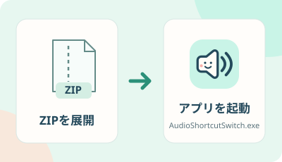
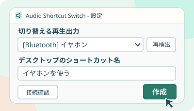
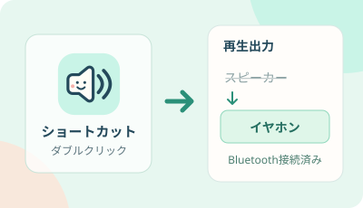

Windows 10 / 11 · x64
ショートカットで
再生出力を切り替え
デスクトップのショートカットから、再生出力を切り替える小さなアプリです。Bluetoothイヤホンなら、接続も自動で行います。
操作イメージ
イヤホンを使う
再生出力
スピーカー Bluetoothイヤホン 接続してから切り替えショートカットを開くと、接続と切り替えを実行します。
操作手順
使い方
-

01ZIPを展開して起動
ダウンロードしたZIPを、書き込み可能な場所に展開します。
AudioShortcutSwitch.exeを起動してください。Bluetooth機器は先にWindowsでペアリングします。
-

02出力先を選んで「作成」
切り替えたい再生出力とショートカット名を選び、「作成」を押します。PONアイコンのショートカットがデスクトップにできます。
作成した時点では、音は切り替わりません。
-

03ショートカットをダブルクリック
使いたい出力先のショートカットを開くだけ。Bluetoothイヤホンは接続とStereo出力の確認後、再生出力を切り替えます。
スピーカーやUSB DACなどにも作れます。
Stereo出力が見つからないとき
イヤホンの電源を入れ、設定画面の「接続確認」を一度押してからショートカットを作成してください。確認だけでは既定の出力は変わりません。
Windows用アプリをダウンロード
Windows 10 / 11 x64 対応